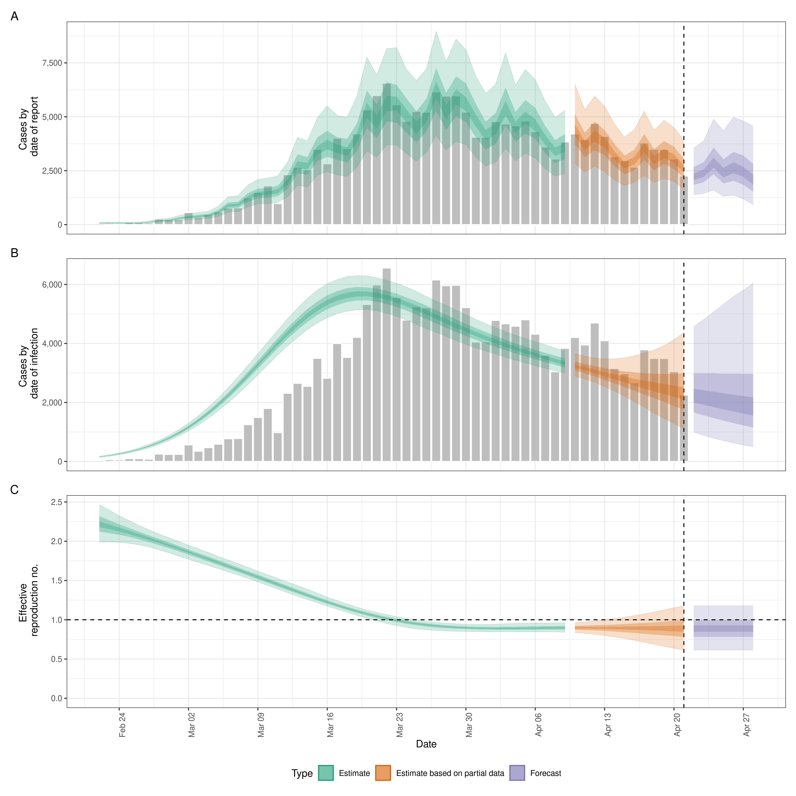
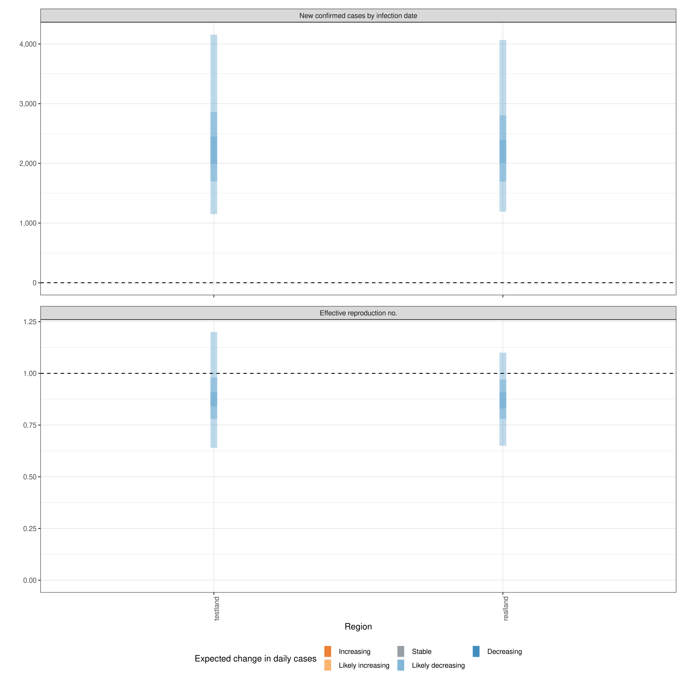

This package estimates the time-varying reproduction number, growth rate, and doubling time using a range of open-source tools (Abbott et al.), and current best practices (Gostic et al.). It aims to help users avoid some of the limitations of naive implementations in a framework that is informed by community feedback and is actively supported.
It estimates the time-varying reproduction number on cases by date of infection (using a similar approach to that implemented in {EpiEstim}). Imputed infections are then mapped to observed data (for example cases by date of report) via a series of uncertain delay distributions (in the examples in the package documentation these are an incubation period and a reporting delay) and a reporting model that can include weekly periodicity.
Uncertainty is propagated from all inputs into the final parameter estimates, helping to mitigate spurious findings. This is handled internally. The time-varying reproduction estimates and the uncertain generation time also give time-varying estimates of the rate of growth.
The default model uses a non-stationary Gaussian process to estimate the time-varying reproduction number and then infer infections. Other options include:
- A stationary Gaussian process (faster to estimate but currently gives reduced performance for real time estimates).
- User specified breakpoints.
- A fixed reproduction number.
- As piecewise constant by combining a fixed reproduction number with breakpoints.
- As a random walk (by combining a fixed reproduction number with regularly spaced breakpoints (i.e weekly)).
- Inferring infections using deconvolution/back-calculation and then calculating the time-varying reproduction number.
- Adjustment for the remaining susceptible population beyond the forecast horizon.
These options generally reduce runtimes at the cost of the granularity of estimates or at the cost of real-time performance.
The documentation for estimate_infections provides examples of the implementation of the different options available.
Forecasting is also supported for the time-varying reproduction number, infections and reported cases using the same generative process approach as used for estimation.
A simple example of using the package to estimate a national Rt for Covid-19 can be found here.
EpiNow2 also supports adjustment for truncated data via estimate_truncation() (though users may be interested in more flexibility and if so should check out the epinowcast package), and for estimating dependent observations (i.e deaths based on hospital admissions) using estimate_secondary().
Installation
Install the released version of the package:
install.packages("EpiNow2")Install the development version of the package with:
install.packages("EpiNow2", repos = "https://epiforecasts.r-universe.dev")Alternatively, install the development version of the package with pak as follows (few users should need to do this):
# check whether {pak} is installed
if (!require("pak")) {
install.packages("pak")
}
pak::pkg_install("epiforecasts/EpiNow2")If using pak fails, try:
# check whether {remotes} is installed
if (!require("remotes")) {
install.packages("remotes")
}
remotes::install_github("epiforecasts/EpiNow2")Windows users will need a working installation of Rtools in order to build the package from source. See here for a guide to installing Rtools for use with Stan (which is the statistical modelling platform used for the underlying model). For simple deployment/development a prebuilt docker image is also available (see documentation here).
Quick start
EpiNow2 is designed to be used with a single function call or to be used in an ad-hoc fashion via individual function calls. The core functions of EpiNow2 are the two single-call functions epinow(), regional_epinow(), plus functions estimate_infections(), estimate_secondary() and estimate_truncation(). In the following section we give an overview of the simple use case for epinow and regional_epinow. estimate_infections() can be used on its own to infer the underlying infection case curve from reported cases and estimate Rt. Estimating the underlying infection case curve via back-calculation (and then calculating Rt) is substantially less computationally demanding than generating using default settings but may result in less reliable estimates of Rt. For more details on using each function see the function documentation.
The first step to using the package is to load it as follows.
Reporting delays, incubation period and generation time
Distributions can either be fitted using package functionality or determined elsewhere and then defined with uncertainty for use in EpiNow2. When data is supplied a subsampled bootstrapped lognormal will be fit (to account for uncertainty in the observed data without being biased by changes in incidence). An arbitrary number of delay distributions are supported with the most common use case likely to be a incubation period followed by a reporting delay.
For example if data on the delay between onset and infection was available we could fit a distribution to it with appropriate uncertainty as follows (note this is a synthetic example),
reporting_delay <- estimate_delay(
rlnorm(1000, log(2), 1),
max_value = 15, bootstraps = 1
)If data was not available we could instead make an informed estimate of the likely delay (this is a synthetic example and not applicable to real world use cases and we have not included uncertainty to decrease runtimes),
reporting_delay <- dist_spec(
mean = convert_to_logmean(2, 1), sd = convert_to_logsd(2, 1), max = 10,
dist = "lognormal"
)Here we define the incubation period and generation time based on literature estimates for Covid-19 (see here for the code that generates these estimates). Note that these distributions may not be applicable for your use case and that we have not included uncertainty here to reduce the runtime of this example but in most settings this is not recommended.
generation_time <- get_generation_time(
disease = "SARS-CoV-2", source = "ganyani", max = 10, fixed = TRUE
)
incubation_period <- get_incubation_period(
disease = "SARS-CoV-2", source = "lauer", max = 10, fixed = TRUE
)epinow()
This function represents the core functionality of the package and includes results reporting, plotting and optional saving. It requires a data frame of cases by date of report and the distributions defined above.
Load example case data from EpiNow2.
reported_cases <- example_confirmed[1:60]
head(reported_cases)
#> date confirm
#> 1: 2020-02-22 14
#> 2: 2020-02-23 62
#> 3: 2020-02-24 53
#> 4: 2020-02-25 97
#> 5: 2020-02-26 93
#> 6: 2020-02-27 78Estimate cases by date of infection, the time-varying reproduction number, the rate of growth and forecast these estimates into the future by 7 days. Summarise the posterior and return a summary table and plots for reporting purposes. If a target_folder is supplied results can be internally saved (with the option to also turn off explicit returning of results). Here we use the default model parameterisation that prioritises real-time performance over run-time or other considerations. For other formulations see the documentation for estimate_infections().
estimates <- epinow(
reported_cases = reported_cases,
generation_time = generation_time_opts(generation_time),
delays = delay_opts(incubation_period + reporting_delay),
rt = rt_opts(prior = list(mean = 2, sd = 0.2)),
stan = stan_opts(cores = 4, control = list(adapt_delta = 0.99)),
verbose = interactive()
)
names(estimates)
#> [1] "estimates" "estimated_reported_cases"
#> [3] "summary" "plots"
#> [5] "timing"Both summary measures and posterior samples are returned for all parameters in an easily explored format which can be accessed using summary. The default is to return a summary table of estimates for key parameters at the latest date partially supported by data.
| measure | estimate |
|---|---|
| New confirmed cases by infection date | 2313 (1159 – 4345) |
| Expected change in daily cases | Likely decreasing |
| Effective reproduction no. | 0.89 (0.62 – 1.2) |
| Rate of growth | -0.026 (-0.1 – 0.038) |
| Doubling/halving time (days) | -26 (18 – -6.7) |
Summarised parameter estimates can also easily be returned, either filtered for a single parameter or for all parameters.
head(summary(estimates, type = "parameters", params = "R"))
#> date variable strat type median mean sd lower_90
#> 1: 2020-02-22 R NA estimate 2.140044 2.142893 0.13818099 1.937615
#> 2: 2020-02-23 R NA estimate 2.105628 2.106892 0.11415164 1.936612
#> 3: 2020-02-24 R NA estimate 2.068985 2.069442 0.09420757 1.921287
#> 4: 2020-02-25 R NA estimate 2.031434 2.030725 0.07830576 1.907767
#> 5: 2020-02-26 R NA estimate 1.991226 1.990969 0.06634858 1.884688
#> 6: 2020-02-27 R NA estimate 1.950962 1.950427 0.05807390 1.856440
#> lower_50 lower_20 upper_20 upper_50 upper_90
#> 1: 2.046299 2.104219 2.174057 2.232616 2.370781
#> 2: 2.025782 2.075403 2.132810 2.182697 2.294095
#> 3: 2.003747 2.044222 2.090967 2.131610 2.225019
#> 4: 1.977390 2.010528 2.048636 2.082264 2.163819
#> 5: 1.944677 1.974170 2.008207 2.035011 2.103163
#> 6: 1.910567 1.935790 1.965265 1.988672 2.046538Reported cases are returned in a separate data frame in order to streamline the reporting of forecasts and for model evaluation.
head(summary(estimates, output = "estimated_reported_cases"))
#> date type median mean sd lower_90 lower_50 lower_20
#> 1: 2020-02-22 gp_rt 65.5 67.2870 18.83096 40 54 61
#> 2: 2020-02-23 gp_rt 78.0 78.8395 21.73755 47 63 72
#> 3: 2020-02-24 gp_rt 77.0 78.8920 21.59142 47 64 72
#> 4: 2020-02-25 gp_rt 73.0 75.0705 20.82804 45 61 68
#> 5: 2020-02-26 gp_rt 78.0 79.8325 22.03166 47 65 73
#> 6: 2020-02-27 gp_rt 110.0 112.9160 28.92359 71 92 103
#> upper_20 upper_50 upper_90
#> 1: 70 79.00 101
#> 2: 83 92.00 117
#> 3: 82 92.00 116
#> 4: 78 87.00 115
#> 5: 83 91.25 120
#> 6: 118 130.00 165A range of plots are returned (with the single summary plot shown below). These plots can also be generated using the following plot method.
plot(estimates)
regional_epinow()
The regional_epinow() function runs the epinow() function across multiple regions in an efficient manner.
Define cases in multiple regions delineated by the region variable.
reported_cases <- data.table::rbindlist(list(
data.table::copy(reported_cases)[, region := "testland"],
reported_cases[, region := "realland"]
))
head(reported_cases)
#> date confirm region
#> 1: 2020-02-22 14 testland
#> 2: 2020-02-23 62 testland
#> 3: 2020-02-24 53 testland
#> 4: 2020-02-25 97 testland
#> 5: 2020-02-26 93 testland
#> 6: 2020-02-27 78 testlandCalling regional_epinow() runs the epinow() on each region in turn (or in parallel depending on the settings used). Here we switch to using a weekly random walk rather than the full Gaussian process model giving us piecewise constant estimates by week.
estimates <- regional_epinow(
reported_cases = reported_cases,
generation_time = generation_time_opts(generation_time),
delays = delay_opts(incubation_period + reporting_delay),
rt = rt_opts(prior = list(mean = 2, sd = 0.2), rw = 7),
gp = NULL,
stan = stan_opts(cores = 4, warmup = 250, samples = 1000)
)
#> INFO [2023-06-09 13:52:11] Producing following optional outputs: regions, summary, samples, plots, latest
#> INFO [2023-06-09 13:52:11] Reporting estimates using data up to: 2020-04-21
#> INFO [2023-06-09 13:52:11] No target directory specified so returning output
#> INFO [2023-06-09 13:52:11] Producing estimates for: testland, realland
#> INFO [2023-06-09 13:52:11] Regions excluded: none
#> INFO [2023-06-09 13:52:40] Completed estimates for: testland
#> INFO [2023-06-09 13:53:07] Completed estimates for: realland
#> INFO [2023-06-09 13:53:07] Completed regional estimates
#> INFO [2023-06-09 13:53:07] Regions with estimates: 2
#> INFO [2023-06-09 13:53:07] Regions with runtime errors: 0
#> INFO [2023-06-09 13:53:07] Producing summary
#> INFO [2023-06-09 13:53:07] No summary directory specified so returning summary output
#> INFO [2023-06-09 13:53:08] No target directory specified so returning timingsResults from each region are stored in a regional list with across region summary measures and plots stored in a summary list. All results can be set to be internally saved by setting the target_folder and summary_dir arguments. Each region can be estimated in parallel using the future package (when in most scenarios cores should be set to 1). For routine use each MCMC chain can also be run in parallel (with future = TRUE) with a time out (max_execution_time) allowing for partial results to be returned if a subset of chains is running longer than expected. See the documentation for the future package for details on nested futures.
Summary measures that are returned include a table formatted for reporting (along with raw results for further processing). Futures updated will extend the S3 methods used above to smooth access to this output.
knitr::kable(estimates$summary$summarised_results$table)| Region | New confirmed cases by infection date | Expected change in daily cases | Effective reproduction no. | Rate of growth | Doubling/halving time (days) |
|---|---|---|---|---|---|
| realland | 2176 (1192 – 4065) | Likely decreasing | 0.87 (0.65 – 1.1) | -0.032 (-0.096 – 0.03) | -22 (23 – -7.2) |
| testland | 2217 (1150 – 4155) | Likely decreasing | 0.87 (0.64 – 1.2) | -0.031 (-0.099 – 0.036) | -23 (19 – -7) |
A range of plots are again returned (with the single summary plot shown below).
estimates$summary$summary_plot
Reporting templates
Rmarkdown templates are provided in the package (templates) for semi-automated reporting of estimates. If using these templates to report your results please highlight our limitations as these are key to understanding the results from EpiNow2 .
Contributing
File an issue here if you have identified an issue with the package. Please note that due to operational constraints priority will be given to users informing government policy or offering methodological insights. We welcome all contributions, in particular those that improve the approach or the robustness of the code base. We also welcome additions and extensions to the underlying model either in the form of options or improvements.